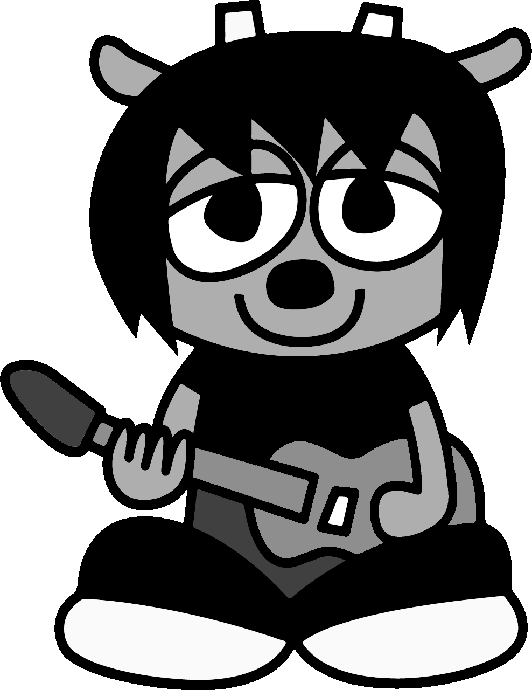

Archives of the original PaRappa the Rapper websites from the late 1990s and early 2000s. Sony Computer Entertainment maintained official PaRappa websites for each game release, featuring Flash animations, downloadable wallpapers, character profiles, and mini-games. Rodney Alan Greenblat's RodneyFun.com also served as a hub for PaRappa artwork and merchandise. The official Japanese PaRappa Town website featured interactive elements and community sections. Most of these sites have since gone offline, but snapshots survive through the Wayback Machine and fan archives. 1990年代後半から2000年代初頭にかけて公開されていた、パラッパラッパー公式ウェブサイトのアーカイブです。ソニー・コンピュータエンタテインメントは、各ゲームのリリースに合わせてFlashアニメーション、ダウンロード可能な壁紙、キャラクタープロフィール、ミニゲームなどを掲載したパラッパ公式サイトをタイトルごとに運営していました。ロドニー・アラン・グリーンブラット氏のRodneyFun.comもまた、パラッパ関連のアートワークやグッズの発信拠点となっていました。日本の公式サイト「パラッパタウン」には、インタラクティブな要素やコミュニティ機能も用意されていました。これらのサイトの多くは現在閉鎖されていますが、Wayback Machineやファンのアーカイブによってスナップショットが残されています。

parappa-the-rapper.com was the official English-language website for the PaRappa the Rapper franchise, maintained to promote the series to Western audiences. This Wayback Machine snapshot from August 29, 2004 preserves the site as it appeared around the release window of PaRappa the Rapper 2. parappa-the-rapper.comは、パラッパラッパーシリーズを欧米圏に向けて紹介するために運営されていた英語版公式ウェブサイトです。2004年8月29日付けのWayback Machineスナップショットでは、パラッパラッパー2のリリース時期前後の姿で当時のサイトが保存されています。

milkcan.com was the official promotional website for the fictional band MilkCan, built around the release of Um Jammer Lammy (1999). Presented as though the band were real, the site featured character bios for Katy Kat, Lammy, and Ma-san, downloadable media tied to the Make It Sweet! album, and Rodney Alan Greenblat's signature flat-color art. The domain quietly disappeared after 2001 and was never revived, making this Wayback Machine snapshot from February 15, 2001 one of the only surviving looks at the original site. milkcan.comは、1999年のウンジャマ・ラミー発売に合わせて公開された架空のバンドMilkCanの公式プロモーションサイトです。実在のバンドであるかのような体裁でケイティ・キャット、ラミー、マーさんのキャラクタープロフィール、『Make It Sweet!』関連のダウンロード素材、ロドニー・アラン・グリーンブラットのフラットカラーのアートが掲載されていました。ドメインは2001年以降ひっそりと消滅し、その後復活することはありませんでした。2001年2月15日付けのWayback Machineスナップショットが、オリジナルサイトをうかがい知れる数少ない記録となっています。

namco.co.jp/home/aa/am/vg/umjammerlammy/ was Namco's official Japanese product page for the arcade port Um Jammer Lammy NOW!, released to amusement centres in 2000 on Namco System 12 hardware. The site introduced the cabinet to operators and players with the tagline "あの『ウンジャマ・ラミー』がアミューズメントスポットに新登場!" ("That very same Um Jammer Lammy is finally arriving at amusement spots!"), the Lammy logo, a render of the dedicated cabinet, and an "ENTER" link into the rest of the promo. This Wayback Machine snapshot is from February 23, 2002. namco.co.jp/home/aa/am/vg/umjammerlammy/は、2000年にナムコ System 12 基板でアーケードへ移植されたアーケード版『ウンジャマ・ラミー NOW!』を紹介していたナムコ公式の日本向け製品ページです。トップでは「あの『ウンジャマ・ラミー』がアミューズメントスポットに新登場!」というキャッチコピーとともに、ラミーのロゴ、専用筐体のレンダリング、そしてプロモコンテンツ本編へ進む「ENTER」リンクが掲げられ、オペレーターおよびプレイヤーに向けてキャビネットを訴求していました。本リンク先のWayback Machineスナップショットは2002年2月23日付のものです。

 RodneyFun.com
RodneyFun.com rodneyfun.com was the official website of artist Rodney Alan Greenblat, serving as the central hub for all of his characters and IPs — including PaRappa the Rapper, Um Jammer Lammy, and his wider original cast. The site showcased Greenblat's signature flat-color pop art, character profiles, and links into his projects and merchandise. This Wayback Machine snapshot is dated July 11, 2000. rodneyfun.comは、アーティストロドニー・アラン・グリーンブラットの公式ウェブサイトで、パラッパラッパーやウンジャマ・ラミーをはじめとする彼のすべてのキャラクター／IPを束ねる総合拠点でした。グリーンブラットならではのフラットカラーのポップアート、キャラクタープロフィール、各プロジェクトやグッズへのリンクが掲載されていました。このWayback Machineスナップショットは2000年7月11日付のものです。

shop.rodneyfun.com was the official online store of artist Rodney Alan Greenblat, selling officially licensed goods for his characters and IPs — including PaRappa the Rapper, Um Jammer Lammy, and his wider RodneyFun cast. The storefront stocked T-shirts, pins, puppets, figures, and other original merchandise drawn in Greenblat's signature flat-color pop style, shipping directly to fans. This Wayback Machine snapshot is the earliest capture available, dated January 2, 2007, preserving the "RodneyFun.Com Shop" with its product grid and Japanese category sidebar. shop.rodneyfun.comは、アーティストロドニー・アラン・グリーンブラットが運営していた公式オンラインストアで、パラッパラッパーやウンジャマ・ラミーをはじめとする彼のキャラクター／IPの正規ライセンスグッズを販売していました。グリーンブラットならではのフラットカラーのポップなタッチで描かれたTシャツ、ピンバッジ、パペット、フィギュアなどのオリジナル商品を取り扱い、ファンへ直接発送していました。このWayback Machineスナップショットは現存する最古のキャプチャで、2007年1月2日付。商品グリッドと日本語のカテゴリーサイドバーを備えた当時の「RodneyFun.Com Shop」の姿が保存されています。

sonymusic.co.jp/Animation/parappa was the official Japanese website for the 2001 PaRappa the Rapper TV anime, built by Sony Music Entertainment to promote the Fuji TV broadcast. Its visitor counter reads "since 2001.3.21," placing the launch on March 21, 2001 — about three weeks before the April 14 premiere. The Shift-JIS frameset homepage is built around a 4×4 grid of sixteen tiles that assemble into one big cast illustration (shown here) around a TV set announcing the start date. The top menu gave each character their own themed room — Parappa News (with Town News, Special, and Homies sub-pages), PJ Music Fun, Sunny Tea Time, Katy Cutie, and rooms for the anime-original Matt and Paula — alongside Album, Schedule, Information, a site map, a BBS, and a parappa@sme.co.jp contact, with partner links out to Fuji TV, SCE, and RodneyFun.com. This Wayback Machine snapshot is dated April 14, 2001.
sonymusic.co.jp/Animation/parappaは、2001年のテレビアニメ『パラッパラッパー』の日本語公式サイトで、フジテレビでの放送を宣伝するためにソニー・ミュージックエンタテインメントが制作しました。アクセスカウンターには「since 2001.3.21」とあり、公開日は2001年3月21日、4月14日の放送開始の約3週間前であったことがわかります。Shift-JISのframesetで作られたトップページは、16枚のタイルが4×4で組み合わさってキャラクター総出演の一枚絵（本画像）となり、その中央には放送開始日を告げるテレビが描かれています。上部メニューはキャラクターごとのテーマ別ルームへと分岐し、パラッパニュース（街のニュース・Special・Homiesのサブページ付き）、PJミュージックファン、サニー・ティータイム、ケイティ・キューティ、さらにアニメ版オリジナルのマットとポーラの部屋に加え、Album・Schedule・Information・サイトマップ・BBS・parappa@sme.co.jpの連絡先、そしてフジテレビ・SCE・RodneyFun.comへの提携リンクが用意されていました。このWayback Machineスナップショットは2001年4月14日付のものです。

scei.co.jp was the official website of Sony Computer Entertainment Inc., styled as a playful "GARAGE" portal and designed by Rodney Alan Greenblat — the PaRappa the Rapper artist — together with Interlink. The homepage is wallpapered in a repeating pastel pattern of character heads, with a big bubble-letter "GARAGE" logo at the centre and the cast doubling as round navigation buttons, each in its own speech bubble: WHAT'S NEW, SOFTWARE, SCEI SOFTWARE, LOVE & PlayStation, PRESENT!! (a "Garage Watch" giveaway), NEWS & INFO., HARDWARE, CORPORATE PROFILE, and a net 通販 character-goods mail-order shop. A sidebar promotes the PlayStation Award '98 (live 5/15 Fri) and the "Lord of Monsters 3" ("ロドモン") network game, while the footer links out to Sony Online Japan, SCE America, SCE Europe, and Sony Music. The page is trademarked to SCE and credited "© Rodney A. Greenblat / Interlink." This Wayback Machine snapshot is dated June 26, 1998. scei.co.jpは、ソニー・コンピュータエンタテインメントの公式ウェブサイトで、遊び心あふれる「GARAGE（ガレージ）」ポータルとして、パラッパラッパーのアーティストロドニー・アラン・グリーンブラットとInterlinkによってデザインされました。トップページはキャラクターの顔が並ぶパステル調の繰り返し模様で覆われ、中央には大きなバブルレターの「GARAGE」ロゴが置かれ、キャラクターたちがそのまま丸いナビゲーションボタンを兼ねています。それぞれ吹き出し付きで、WHAT'S NEW、SOFTWARE、SCEI SOFTWARE、LOVE & PlayStation、PRESENT!!（「ガレージウォッチ」プレゼント）、NEWS & INFO.、HARDWARE、CORPORATE PROFILE、そしてnet通販のキャラクターグッズ通信販売へと分岐します。サイドバーではPlayStation Award '98（5/15金 ライブ）やネットワークゲーム「ロドモン（Lord of Monsters 3）」を告知し、フッターからはSony Online Japan、SCEアメリカ、SCEヨーロッパ、ソニー・ミュージックへのリンクが張られています。ページはSCEの商標であり、「© Rodney A. Greenblat / Interlink」とクレジットされています。このWayback Machineスナップショットは1998年6月26日付のものです。